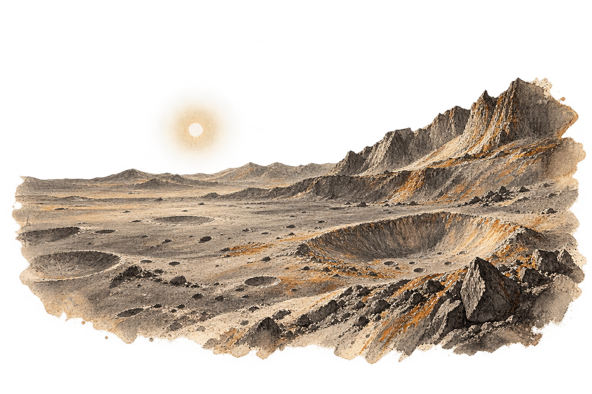
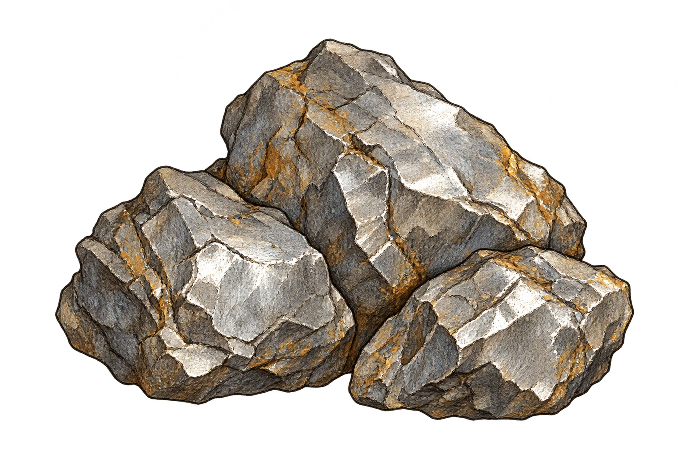

Les terres traverséesDouzième terre 12
Notes de terrain · frontière solaire
Mercure
Le sol garde la chaleur.
Nos gestes, la mémoire.
Ton bouclier tient. Sur cette terre sans ombre, les extracteurs poursuivent leur travail.


échantillon n° 12La matière de cette terre
Métal mercurien
1,53 Gen réserve
266 k / min5 réplicateurs à l’œuvre
Récolte et construction simulées.
Cette terre, tu la connais.
Maîtrise complète · +5 % à la prochaine relève
Une note pour le prochain Semeur
Passer le relais
Les matières deviennent lourdes à arracher. Tes découvertes resteront ; le prochain Semeur repartira avec 260 Traces.